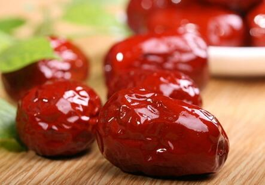

中医很早就用
1、补气养血:这一点是大枣最主要的功效,在中药里面大枣被列为补益药,也是因为这一点。如果您过度劳累,身体疲乏无力,吃上几个大枣马上就会浑身有劲儿。因为大枣中含有大量的糖类物质,主要为
贫血的病人长期服用大枣也可改善贫血症状,大枣中富含钙和铁,其补血效果通常是药物不能比拟的。常用于治疗再生障碍性贫血、白细胞减少症等,大枣对病后体虚的人也有良好的滋补作用。
2、健脾胃:有些人脾胃功能弱,消化不好,可以吃点大枣来解决。大枣能增加胃肠道黏液分泌,纠正胃肠病损,保护肝脏。《群芳谱》记载:“十月取大枣,中破之,去皮核,小火反复炙香,煮汤饮,健脾开胃甚宜人”。就是在大枣成熟的季节,把枣劈开,去掉枣皮和枣核,用小火慢慢烤,直到闻到香味飘出,然后用这样的枣煮水喝,健脾开胃的效果很好,您不妨试试。
脾胃虚弱、腹泻、倦怠无力的人,每日吃大枣五至七颗,或与
3、美容抗衰:这是许多女性朋友非常关注的,只要您坚持吃枣,美容效果比用化妆品都好,因为大枣是补充气血的,能从内而外调节肌肤,而这样的美容效果才是最好的!大枣中丰富的维生素C能减少黑色素的形成,预防色素沉着及老年斑的产生。维生素A有助于改进皮肤的水屏障特性,不会让皮肤干燥。维生素B族有调节皮脂腺分泌的作用。常食大枣可使人面色红润,神采焕发。故俗话说得好:“一日吃三枣,终身不显老”。
4、安神助眠:大枣安神的效果非常好,如果失眠,吃几个大枣也能解决,而且没有服用西药的副作用。
可以在晚饭后将5~7枚大枣煎汤,临睡前喝汤吃枣,能加快入睡。也可加入少许
药王孙思邈的《千金方》里面有个“大枣葱白汤”专治心烦失眠,用大枣10枚,葱白3根,将大枣洗净浸泡后剔去枣核;葱白洗净;锅中放入适量清水,加入大枣,大火烧沸,小火煮约20分钟,再加入葱白煮约10分钟后,去除葱白即成。于睡前吃枣喝汤,疗效很好。
还可将大枣制成枣膏服用,安神效果也很不错,用鲜大枣1000克,洗净去核取肉捣烂,加适量水用小火煎,过滤取汁,混入500克
因为大枣兼具安神、补血的双重效果,古代又常用来治疗脏躁证,相当于现在的更年期综合症,病人主要表现为心神不宁,
大枣的安神效果也被现代医学所证实,大枣中所含有黄酮类化合物(黄酮-双-葡萄糖甙A)有镇静、催眠和降压作用,其中被分离出的柚配质C糖甙类有中枢神经抑制作用,所以大枣具有安神、镇静之功。
5、保肝护肝:这个功效对肝炎病人很有好处。在临床上大枣常用于慢性肝炎和早期肝硬化的辅助治疗。每天吃20枚大枣可预防肝炎。用大枣50克、
研究证实,大枣中的果糖、葡萄糖、低聚糖、酸性多糖参与保肝护肝。大枣内含有三萜类化合物的成分,可以抑制肝炎病毒的活性。一些慢性肝病患者的体内蛋白相对偏低,而大枣富含氨基酸,它们促进肝脏合成蛋白,调整白蛋白与球蛋白比例,防止低蛋白症状。同时大枣能提高体内单核细胞的吞噬功能,有保护肝脏、增强体力的作用;大枣中的维生素C及环磷酸腺苷(cAMP)等,能减轻化学药物对肝脏的损害,并有促进蛋白质合成,增加血清总蛋白含量的作用。大枣中的维生素能够使胆固醇变成胆汁酸,从而预防胆结石的发生。
6、抗肿瘤:大枣成份中维生素C含量很高,而且含有环磷酸腺苷(cAMP)及
大枣中的环磷酸腺苷(cAMP)对治疗各种肿瘤有显著疗效,能有效阻止人体中亚硝酸盐类物质的形成,从而抑制癌细胞的形成与增殖,甚至可调节细胞的分裂增殖,有利于癌细胞向正常细胞转化,有抗癌作用。
大枣中富含的三萜类化合物具有抑制癌细胞的功效,尤以山楂酸效力最强,甚至超过了常用的抗癌药5-氟尿嘧啶。
大枣所含的丰富的维生素C也是抗癌的重要因素,能够增强人体免疫功能,长期食用大枣有降低胃肠道恶性肿瘤发生率的作用。
大枣在医学上还有很多作用,比如抗过敏、缓和毒性药物的副作用等等。
以上笼统介绍了大枣的功能和作用,以下就详细介绍大枣在治病方面的神奇疗效。
【
原料:西洋参3克,大枣10枚,粟米100克。
制作:先将西洋参洗净,置清水中浸泡一夜,切碎西洋参;洗净大枣;将西洋参、大枣、粟米及浸泡西洋参的清水一起倒入砂锅内,再加些清水,小火熬60分钟。
用法:每日1次,早晨食用。
功效:久食本粥可使身体变得强壮,皮肤变得细腻红润。适用于四肢无力,气虚体弱,面色苍白无光泽者。
【大枣菊花粥】 原料:大枣50克,
制作:三者一同放入锅内加清水适量,煮至浓稠时,放入适量
功效:此方具有健脾补血、清肝明目之功效。长期食用可使面部肤色红润,起到保健防病、驻颜美容的作用。
【大枣原料:干香菇20只,大枣8枚,料酒、精盐、味精、姜片、花生油各适量。
制作:将干香菇先用温水浸发至软,再用凉清水洗去泥沙;将大枣洗净,去核。用有盖炖盅,加进澄清过滤的泡发香菇的水和加入适量清水,再放入香菇、大枣、精盐、味精、料酒、姜片、熟花生油少许,盖上盅盖,上蒸笼蒸1小时左右。出笼即可食用。
特点:滑润适口,甜、咸、香、辣味均有,但口味柔和鲜香。
功效:健美、抗衰老,会使女性容光焕发,青春久驻。
【大枣原料:黄豆50克,大枣10枚,粳米200克。
制作:①黄豆洗净泡发一宿。②大枣温水泡15分钟后洗净。③粳米冲洗一下,放入锅中,加水烧开。④放入黄豆小火熬40分钟,再加入大枣熬40分钟。食用时,可根据自己的口味加糖或盐拌匀即可。
功效:补气活血,滋润肌肤。方中黄豆益气养血,健脾宽中,润燥行水,通便解毒。黄豆含有很多B族维生素、微量元素,如经常食用,会提高肌肤的新陈代谢能力,促进肌肤排除毒素,令肌肤润泽青春。大枣可使身体气顺血旺,配合黄豆中丰富的养料送达毛发与全身细胞,以达到润泽肌肤的功效。是肌肤干燥粗糙、发质干枯人士的食疗佳品。
【大枣生姜美容茶】 原料:大枣250克,生姜500克,
制作:所有材料共捣为末,和匀备用。
用法:每次15～25克,清晨煎服或泡水代茶饮。
功效:此茶具有补脾养血、安神解郁、消除皱纹、容颜不老之功效,久服令人容颜白嫩、皮肤细滑、皱纹减少。
【仙人粥】原料:制首乌30克,粳米60克,大枣20枚。
制作:用竹片刮去首乌皮,切片煎取浓汁去渣,将浓汁同粳米、大枣于砂锅内煮粥,熟时加适量红糖,再煮1～2分钟即成。早晚空腹食用,7～10天为一疗程,隔5天后再食用。
功效:抗老祛皱。
3、消斑祛痘妙方脸上的色斑、青春痘让人不胜其烦,这些方子可以让您摆脱这方面的困扰。
【大枣莲药羹】 原料:
制作:①将山药洗净,去皮,切小丁;②大枣洗净;③莲子洗净,泡软,去莲心;④薏米淘洗干净,与山药、大枣和莲子同放锅中,加入少许水,煮至成粥,放入冰糖,待冰糖融化后即可食用。
功效:有很好的润肤、祛斑、防皱功效。
【薏米大枣粥】原料:生薏米100克,大枣12枚,水4碗。
制作:①生薏米用水浸洗;②将4碗水及生薏米倒入煲中;③最后放入大枣(去核),以小火煲45分钟后,即可饮用。
功效:活血养颜,可减少脸部蝴蝶斑及产后面色黑滞及恶露不绝等问题。
【大枣 原料:大枣10枚,
制作:①将大枣冲洗干净,用清水浸泡约2小时后捞出,剔去枣核;②黑木耳用清水泡发,摘洗干净,切成小块;③把大枣、黑木耳放入汤盆内,加入适量清水、冰糖,上笼蒸约1小时即成。每日早、晚餐后各服一次。
功效:润肺补血、活血调经、防治脸部黑斑。脸部长黑斑和气滞血瘀、肌肤营养不良有关,方中大枣补血可使脸色红润,黑木耳可清肺益气,帮助身体排出毒素。本汤可调和营养,补气活血。经常服食,可以使面色红润、驻颜祛斑、体态轻盈苗条,并用于治疗面部黑斑、形瘦。
【大枣 原料:大枣10枚,银耳50克,莲子15克,
制作:①大枣温水浸泡1～2个小时;②白莲子放入温水中浸泡约2小时;③枸杞温水浸泡半个小时;④银耳泡开,去根撕成小朵;⑤在砂锅里放入适量的温水,(水的量是所有材料的4～5倍)小火起锅,待均匀受热后大火烧开转小火炖三个小时左右,莲子略软即可。喝前待温加些蜂蜜,口感更好。
【大枣薏米汤】 原料:大枣20克,
制作:一同放入锅内同煮40分钟,再加上煮熟去壳的鹌鹑蛋,煮上半小时,加入适量红糖或冰糖食之。
功效:此汤具有养心神、清湿毒、健脾胃之功效。常食可使皮肤少生暗疮、粉刺、扁平疣等,使皮肤滋润嫩滑、光洁白净。
【黄柏大枣油】原料:黄柏20克,大枣7枚。
制作:将大枣烧成枣炭,与黄柏共研成细面,加香油煎水。
用法:用纱布蘸取药液,涂擦患处,每晚1次,每次30分钟。
功效:清热化湿,消炎去痘。治疗青春痘,一般用3～5次即可收效。
材料:绿茶(龙井)饮茶量,干玫瑰花7朵,大枣5枚。
用法:用开水300毫升,浸泡5分钟即可饮用。可根据口味调入冰糖或蜂蜜。代茶随意饮用。味道青涩甘甜,耐人回味。
功效:增大排泄油脂量,达到减肥效果。玫瑰花可消脂,大枣可补血养气养颜,绿茶清理皮肤。
【大枣减肥茶】 原料:大枣10枚,玫瑰花3朵,山楂10克,枸杞子15克,
制作:①准备1800毫升的清水将大枣、玫瑰、山楂、荷叶粉、枸杞、菊花都放进去一起煮,放在炉火上直到滚十五分钟左右;②把切片后的柠檬放进去,一分钟熄火。滤去药渣,取汤,凉后服用。
用法:初期每天饮用一两杯,肠胃适应了以后可以当茶喝,等到瘦的差不多就可以把间隔时间拉长,一星期喝一两次就可以了。最好是空腹时饮用,在饭后喝也可以的。可以一次熬好两天的量,放在冰箱里备用,冷热都可以喝,一般喝一个月就可以了,停了以后只要注意饮食调节好就不会反弹的。
【 原料:木瓜(水果型)250克,
做法:①木瓜削皮去籽,切成细丁;②大枣洗净,拍扁去核;③煮开清水,放入大枣,煮10分钟,待大枣出味;放入燕
功效:减肥降脂,丰乳通便,滋润养颜。本品饱腹感强,可控制食欲,
大枣是一味很好的延寿佳品。唐代著名医学家孙思邈,活到101岁,后人称他为“孙真人”、“药王”,据说他经常服食大枣。孙思邈认为大枣“久服轻身,长年不饥,似神仙”。《贾氏说林》还记载:“昔有人得安期大枣,在大海之南煮,三日始熟,香闻十里,死者生,病者起。”
大枣抗衰的功效前面已经说了,这里重点选介几首益寿延年的妙方,让老年朋友在享受美味的同时,也为身体健康带来收获。
【参枣
原料:党参10～20克,大枣20枚,糯米250克、白糖50克。
制作:①党参、大枣同水煎半小时,去党参渣;②糯米蒸饭,大枣铺于饭上,枣参汤加白糖煎为浓汁淋在饭上即可食用。
功效:补气养胃。适用于体虚气弱,乏力倦怠,心悸失眠,食欲不振,肢体浮肿,大便溏薄等症。
【大枣
原料:大枣10枚,糯米200克,茯苓15克,枸杞子15克。
制作:①糯米、大枣分别淘洗干净,浸泡1～2小时;②锅中放入足够的清水,大火烧开后下糯米、大枣、茯苓,煮开后转小火慢熬40分钟;③下枸杞继续煮5～10分钟,喜甜的可以同时加入适量冰糖至融化即可。
【大枣枸杞茶】
原料:大枣6枚,枸杞子10克。
制作:将枸杞子、大枣一起放在锅中,加入适量的水,大火煮沸,转用小火焖煮5分钟即可。也可以用开水直接冲泡服用
功效:枸杞能补肝肾明目、增强免疫力、滋养强身等多种优点,本方简便易行,对于身体虚弱、肠胃不适、容易口干舌燥、肝机能代谢失调者可以长期服用。如口干舌燥很严重或火大者可另加菊花1～2朵一起冲服。
【首乌大枣粥】
原料:
制作:先将粳米、大枣一同入锅,熬煮成粥。待粥半熟时加入何首乌粉,边煮边搅匀,至粥黏稠即成,再加入冰糖调味。
功效:此粥有补肝肾、益精血、通便、解毒等功效,适用于肝肾两虚、精血不足所致的头昏眼花、失眠健忘、梦遗滑精等症,老年性高血压、血管硬化患者久服可延年益寿。
四、大枣防治感冒妙方姜枣苏叶汤:生姜3克,大枣3枚,苏叶3克,红糖15克。将生姜切丝,大枣劈开,与苏叶共装茶杯中,冲入热水200毫升,加盖浸泡5分钟,加入适量红糖,搅匀趁热饮用。服后躺在床上,盖上被子,身体就会微微汗出,感冒症状就会减轻,服用一两天就可以痊愈。
葱姜大枣汤:葱白9克,生姜6克,大枣10枚。先将葱白、生姜洗净切丝,与大枣、粳米加水煎汤,乘热服用,每日2次。疗效同上方。
银花大枣茶:银花10克,大枣5枚,菊花5克,沸水冲泡,代茶饮。本方清热解毒,可治疗病毒性感冒引起的发热、咽痛等症。
大枣
大枣芫荽汤:大枣5枚,芫荽10克(干品6克),